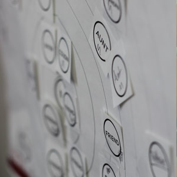

In an information-rich world, the scarce resource is attention.
– Herbert Simon, 1969 –
Team papercherry worked with HP to develop the greeting card of the future. Our goal was to to envision and prototype how people will acknowledge each other on special occasions in an increasingly digital world. Using a number of user-centered design techniques, we studied relationships and the way people celebrate them using social expressions.
Our hunt statement guided our project through both the research and prototyping phase, and represents the objectives of our group: We want to explore traditional gift-giving and card-sending customs of people in their 20s and distill the nature of their social interactions in order to modernize the card-giving experience for a 21st century audience.
Americans are prolific purchasers of greeting cards, buying more than 7 billion a year. This demographic can, perhaps unsurprisingly, be further narrowed to parents and grandparents. However, we wanted to look at a different demographic. 20 and 30-year-olds are the the future customers of the next generation social expressions, and we focused on this group of people for that and their close relationship with technology.
We looked a number of existing products in the social expression space, from purely technological solutions such as ecards to more traditional versions such as postcards and gift certificates. In addition, we conducted a literature review on the history of greeting cards, which gave context to the current practices and methods of traditional card-giving activities.
We used a number of different research methods to understand our problem space and observe our chosen demographic. We chose to study both senders and receivers to understand the entire social expressions space.
Semi-Structured Interviews gave us detailed background knowledge to jumpstart our research. Many of these participants came from an initial online survey of over 150 participants.
Relationship Maps, such as the example at right, gave insight to the ways people interacted and communicated with those close to them. Participants came from semi-structured interviews.
Contextual Inquiries (CI), are in-depth studies observing both the process of sending and receiving a card. During the spring research phase we conducted 14 contextual inquiries.
Guerrilla Research, allowed us to quickly observe large amounts of participants to gather data.
After conducting our field research, we synthesized all our data using data modeling and affinity diagramming. Modeling helped us further understand how people communicate and for what reasons. Affinity diagramming is a method where we took primary data and quotes from our research and organized them in a bottom-up fashion to see what themes emerged. These analysis methods yielded 4 key insights as a result of our spring research. We took these insights and used them to guide our visioning and concept generation process.
Emotional Distance creates a necessity for sending gifts and cards.
Technology causes a shortage of emotional attention, which contributes to social competition.
The card is an effective medium that is required to convey emotion.
A card influences a relationship and inspires a heartwarming response.
At the end of the spring semester, we generated more than 50 initial ideas across 11 broad categories. We decided to focus on three of these categories - expressive messages, augmenting the receiving experience, and paired objects.
At this time, we also met with our clients to discuss constraints and metrics that were used to narrow down those many initial ideas to just three. By narrowing it down, we were able to focus in and storyboard the interactions of the three and get validation from potential users through rough paper prototypes and speed dating.
We tested six different iterations in the process of designing our solution. From our initial paper prototypes to the functional mobile app, the team refined and tweaked a number of different features. Each iteration was presented to at least 6 pairs of participants, comprising of both a sender and receiver. Recruiting pairs of participants enabled us to test both the sender and receiver phases of a social expression and allow people to send emotional and personal messages in a realistic scenario.
Our design solution combined the digital and physical to help our target demographic of 20-year-olds share a new type of social expression and close the gap of emotional distance. Due to the nature of our project, we are not able to present our final design. For more information, please contact the team members or the Carnegie Mellon MHCI program directly.
Our spring and summer presentations are available below. Unfortunately we are unable to offer a download of Inkwell, but a demonstration can be seen in our concept video.
Spring Research Presentation (PDF, 7mb)
Spring Concept Video
Meet Catherine. She’s an amalgamation of our typical demographic, a girl living in our digital age who will show you about sentiment and the importance of memory, and illustrate the problem space we discovered in the social expressions field.
Papercherry is a multidisciplinary team of Carnegie Mellon students with backgrounds ranging from history to computer science. They are supported by faculty from the Human-Computer Interaction Institute at Carnegie Mellon University and designers from MAYA Design. They are sponsored by HP.
Rachel Jakab
Project Manager
Rachel majored in history at Davidson and material culture at Edinburgh. She worked on an archaeological dig in Cyprus.
Nick Yeh
Design Lead
Nick has a Master of Arts from National Chiao Tung University and a Bachelor’s of Engineering from National Taiwan Normal University, where both trained him to be an independent observer and logical thinker with strong design skills.
Arun Ganesan
Research Lead
Arun has a Bachelor’s of Engineering in Computer Science from Anna University (India). During his recent experience as a user experience designer, he designed iOS and web apps.
Brian Yee
Tech Lead
Brian did his undergrad at Carnegie Mellon, where he majored in Information Systems. He's worked for IBM and Google.
Julien Altieri
Web & Documentation Lead
Julien has a Bachelor’s of Engineering and a Master’s Degree in Computer Science from Ecole Polytechnique in France where he focused on computer vision, image processing and networking.